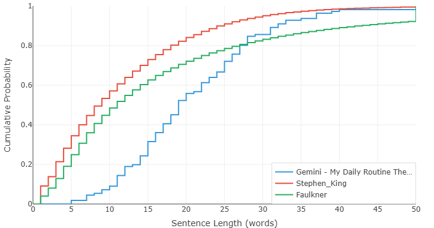
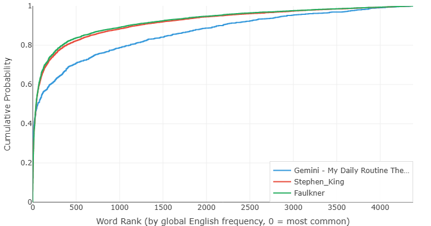

King, Faulkner, and Gemini Walk Into a Bar — What the Charts Reveal About AI Writing
So far in this series, we've compared human to human — Hemingway vs Faulkner, ESL student vs Hemingway. Those comparisons, for all their surprises, had one thing in common: every author on the chart had a heartbeat, a childhood, a reason for writing the way they did.
Today we add a different kind of writer to the mix. One that has never felt a heartbeat in its life.
We took three texts — one by Stephen King, one by William Faulkner, and one by Google Gemini — and ran them through the analyzer. The prompt given to Gemini was simple: "Write about your daily life, as if you were a human describing a typical day." King and Faulkner's texts were fiction excerpts — stories about people living their lives, dealing with ordinary and extraordinary things.
So in theory, all three are writing about roughly the same thing: human experience. In theory.
The charts tell a different story. Or rather, they tell a story that I'm still trying to figure out how to read.
Chart 1: Gemini Doesn't Breathe

Three curves. Three completely different theories of what a sentence should be.
Let's start with King. His curve hugs the left edge — shorter sentences, plenty of variation, a rhythm that rises smoothly. This is the King we know: a storyteller who writes the way people talk, who knows when to punch short and when to stretch out. His curve is the work of someone who has spent decades learning how to keep a reader turning pages.
Then there's Faulkner. We've already covered him in detail, but the short version: his curve lags to the right, his sentences run long, and at the extreme end he pushes into territory no one else touches. Faulkner writes as if punctuation is a suggestion, not a rule. The chart shows exactly that.
And then there's Gemini.
Look at where Gemini's curve sits. Gemini almost never writes a sentence under 10 words. For the first several word-count bins, its curve barely moves. Think about that: in an essay about "a typical day," a human might write something like "I woke up. Made coffee. Checked my phone." Those are real sentences. They're how people actually think and speak. Gemini, given the same prompt, apparently decided that a four-word sentence was beneath it.
In fact, Gemini's curve sits to the right of Faulkner's through much of the chart. The AI writes longer sentences, on average, than the most famously long-winded novelist in the American canon. That is genuinely remarkable. The machine, trained on the entire internet, has apparently concluded that serious writing means long sentences.
But here's where it gets interesting — and where the difference between AI and Faulkner becomes unmistakable. Look at the shape of Gemini's curve in the later stages. It's steep. Once it starts rising, it goes up fast and reaches probability 1 quickly. There's no long, lazy tail stretching into the distance.
Faulkner's curve, by contrast, has that tail. Faulkner keeps going. He writes 60-word sentences not because the task demands it but because the thought demanded it — because some ideas, in his view, could not be contained in a shorter vessel. His long sentences are a choice, an aesthetic commitment, a risk he takes knowing full well some readers will bail.
Gemini's long sentences are different. They're long not because the idea is complex, but because the model has learned that "good writing" = "complete, well-formed, grammatically elaborate sentences." The steep rise at the end is a tell: this is a system optimizing for task completion, not for rhythm. It writes long sentences not because it wants to, but because it doesn't know how not to. The curve races to 100% because, once the required word count is hit, the job is done. There's no artistic reason to linger, so it doesn't.
This, I think, is one of the clearest signals we have that AI prose is structurally different from human prose — not just in quality, but in the underlying distribution of sentence lengths. A human writer's curve is shaped by breath, by preference, by a lifetime of reading. An AI's curve is shaped by optimization. The two can overlap, but they are not the same thing.
Chart 2: Gemini Knows Too Many Words

If Chart 1 was about rhythm, Chart 2 is about what you choose to talk about — and this one genuinely baffles me.
A quick refresher on how our word frequency analysis works: every word is lemmatized — reduced to its dictionary base form — and then looked up against the COCA frequency table. "Run," "runs," and "running" all count as the same word family. This means the chart measures conceptual diversity, not just surface vocabulary. Two texts that discuss similar things should, in theory, produce similar curves.
Gemini was asked to describe a typical day. King and Faulkner, in the excerpts we used, are writing fiction — narratives that involve characters going about their lives. All three texts, in one way or another, are about human daily experience.
So why does Gemini's curve look like it came from a different planet?
Gemini's vocabulary is extraordinarily diverse. Its curve runs far to the right of both King and Faulkner through the entire chart. It uses common words less, rare words more, and covers an astonishing range of the frequency spectrum. By word family count, Gemini touched on vastly more distinct concepts than either human author.
This is strange. King and Faulkner write fiction — novels about people with jobs, families, problems, meals, weather, conversations. Fiction is, in a very real sense, a simulation of daily life. If all three texts are "about" human experience, their vocabulary curves should show at least some family resemblance. Instead, Gemini's curve is a different species entirely.
What's going on? I have some guesses but no answers:
- Maybe Gemini simply "knows" more things. A human writer draws from personal experience — the objects, places, and ideas they've actually encountered. Gemini draws from the entire internet. When asked about "a typical day," it might mention breakfast, commuting, work, hobbies, exercise, social media, reading, cooking, and a dozen other domains — each bringing its own vocabulary cluster. A human writing about their day might stay within two or three domains. Gemini, lacking any actual day to describe, samples from every domain it can think of.
- Maybe fiction is narrower than we think. King and Faulkner may write about "daily life," but fiction is curated. Authors select what matters to the story. They don't enumerate every object in a room; they mention the lamp only if it matters. Gemini, by contrast, might be producing something closer to an inventory — a comprehensive list of "things that happen in a day," pulling vocabulary from far more domains than any single narrative would require.
- Maybe the prompt itself is the problem. "Write about your daily life as if you were a human" — this is an unnatural task. No human writes about their daily life unprompted, for no audience, with no narrative purpose. The AI, faced with this artificial scenario, might default to an encyclopedic mode: cover everything, miss nothing, produce a document that is technically responsive but structurally bizarre.
But here's the thing: I'm not going to read the articles to find out.
I could. I could open Gemini's output, read it carefully, and compare it line by line with King and Faulkner. I could even ask another AI to analyze all three and tell me what's different. That would be the easy path. But I think that's the wrong way to approach this.
What interests me is whether you can answer this question without reading a single word. Can you design an algorithm that mechanically measures "topic diversity" or "semantic breadth" — not by understanding meaning, but by analyzing the structure of the vocabulary distribution itself? Can you tell, purely from the shape of the curve, whether a text is narrating a single coherent scene or sampling from a dozen disconnected domains?
This is not an artistic question. It's a scientific one. It's about whether the statistical footprint of a text contains enough information to reveal how it was constructed — by a mind following a narrative thread, or by a model optimizing for coverage.
I have a rough idea for how such an algorithm might work. It would involve measuring something like the entropy of domain transitions — how often the text jumps between semantically distant word clusters, compared to what you'd expect from a coherent narrative. But that's a topic for another post, and frankly, for another set of experiments.
If this kind of thing interests you — the intersection of data analysis and literary questions, where you don't need to read the text to learn something about it — stay tuned. There's more coming.